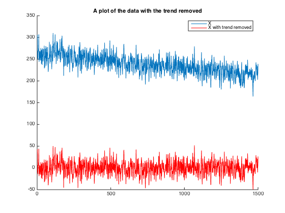
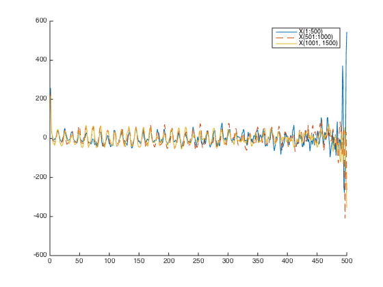

Contents
Part B
clear; close all;
load('hw7_data.mat');
A = [ 1:1500; ones(1,1500)];
A = A';
param = (A'*A)\A'*X;
Xtilde = X - A*param;
disp(['The optimal slope, a, of the line is: ' num2str(param(1))]);
disp(['The optimal y-intercept of the line is: ' num2str(param(2))]);
figure; hold;
plot(X);
plot(Xtilde, 'r');
title('A plot of the data with the trend removed');
legend('X', 'X with trend removed');
The optimal slope, a, of the line is: -0.033563
The optimal y-intercept of the line is: 263.3308
Current plot held

Part C
Kx1 = computeCovariance(Xtilde(1:500,1));
Kx2 = computeCovariance(Xtilde(501:1000));
Kx3 = computeCovariance(Xtilde(1001:1500));
figure;hold;
plot(Kx1);
plot(Kx2 ,'--');
plot(Kx3), '-.-';
legend('X(1:500)', 'X(501:1000)', 'X(1001, 1500)');
Current plot held
